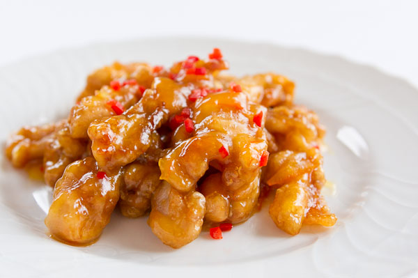

Ingredients
1.Chicken Breast - 1 lb (2 big breasts)
2.Egg - 1
3.Salt - 1/2 tsp
4.Ground Black Pepper - 1/4 tsp
5.Corn Starch - 2 + 1 tblsp
6.Water - 1/4 cup
7.Green Onions - 3 stalks (finely chopped)
8.Dried Red Chilly - 4 (deseeded and chopped)
Sauce Mix
1.Orange Juice (preferably fresh squeezed) - 1.5 cup
2.Ginger (grated) - 1/2 tsp
3.Garlic (Grated) - 1 clove
4.Brown Sugar - 4 tblsp
5.Soy Sauce - 2 tblsp
6.Chili Garlic Sauce - 1 tblsp
7.Sesame Oil - 1 tblsp
8.Salt - to taste
Method
1. Clean the chicken and cut it into small pieces.
2. Mix the chicken with salt, pepper and lemon juice.
3. Add the egg and 2 tblsp of corn starch to the chicken pieces and mix well.
4. Shallow fry or deep fry the chicken pieces till they turn light brown. Drain the excess oil and keep it aside.
5. Mix all the ingredients under 'Sauce Mix'.
6. Add the 'sauce mix' to a pan/ wok and bring it to a boil.
7. Mix 1 tblsp of corn starch with the water. Add this gradually to the sauce till the sauce thickens up.
8. Add the fried chicken pieces, dried red chilly and green onions to the sauce.
9. Simmer for few minutes and switch off. Garnish with dry orange peel or green onions and serve over steamed rice.